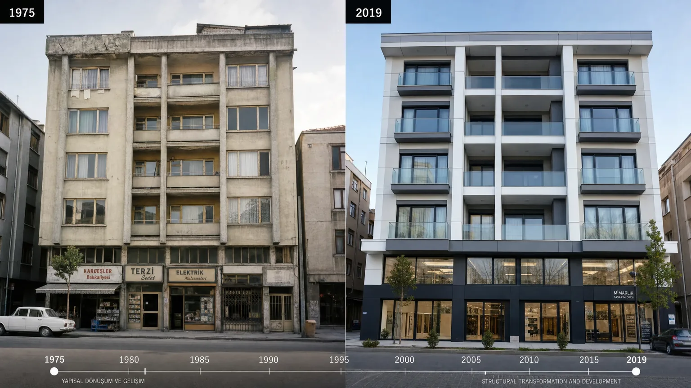

Eski Binalar Deprem Yönetmeliğine Uyum Sağlamalı mı? 2026
Türkiye'nin yapı stoğunun %60'ı 1999 öncesinde inşa edildi — yani eski deprem yönetmeliklerine göre. Bu binalar TBDY 2019 standartlarının çok altında. Eski binaların yeni yönetmeliğe uyumu zorunlu mu, opsiyonel mi? Ev sahipleri ne yapmalı?
Türkiye'de Deprem Yönetmeliklerinin Tarihi (1940-2019)
Türkiye'nin deprem yönetmeliği gelişimi:
1940 — İlk Yönetmelik: 1939 Erzincan depremi sonrası. Çok temel kurallar, sadece deprem bölgeleri tanımı.
1953 — DBYBHY: İlk modern yönetmelik. 4 bölgeli risk haritası tanıtıldı.
1968-1975: Genel revizyonlar. Sismik katsayı kavramı.
1998 — Major güncelleme: Spektral analiz ilkeleri. Modern projeler bu yönetmelikle çalıştı.
2007 — DBYBHY 2007: Performans bazlı tasarımın temelleri atıldı.
2019 — TBDY 2019: Avrupa Eurocode 8 ile uyumlu. Sürekli spektral hızlanma haritası, 6 zemin sınıfı, 3 performans hedefi.
1975 Yönetmeliği Öncesi İnşa Edilen Binalar: Risk Nedir?
1975 öncesi binaların risk faktörleri:
(1) Yapı denetim eksikliği: Çoğu bina ruhsatsız veya minimum kontrollü. Kaçak kat ve tadilatlar yaygın.
(2) Düşük beton dayanımı: Genelde C16-C20 (modern minimum C25). Beton karışım oranları bilinmez.
(3) Düz donatı kullanımı: Modern binalar nervürlü donatı kullanır. Düz donatı betona kötü tutunur.
(4) Etriyе (yatay donatı) eksikliği: Kolonlarda etriye sıklığı yetersiz, sünek davranış yok.
(5) Yumuşak kat (zemine dükkan): Yaygın bir hatadır. Bu binaların yıkım riski %75-90 (M7+ depremde).
1975-1998 Arası Yapılar: Yeterli Koruma Var mı?
1975-1998 arası yapıların durumu kısmen iyileşti ama hala yetersiz: (1) Sismik katsayı uygulandı (genellikle 0.10-0.15g). Modern değerin 1/3'ü. (2) Yapı denetim 1980'lerde yaygınlaştı ama uygulamada eksiklikler vardı. (3) 1998 öncesi ZE/ZF zemin sınıfları tanımlanmadı.
Bu dönem yapılarının %60-70'i 'orta risk' kategorisindedir. Performans raporu olmadan kesin değerlendirme yapılamaz. Detaylar için ilgili rehber.
1998 ve 2007 Yönetmeliği Binalar: Farklar
1998 yönetmeliği: Spektral analiz, 4 zemin sınıfı, 4 deprem bölgesi. Bu yönetmeliğe uyumlu yapılan binalar M7'ye dayanabilir; ancak inşaat kalitesi şart.
2007 yönetmeliği (DBYBHY 2007): İlk performans bazlı tasarım. 'Performans hedefi' kavramı geldi. Bu binalar M7.5'e dayanabilir.
Bu iki yönetmelik arasındaki binaların gerçek dayanımı, müteahhit ve yapı denetim kalitesine bağlıdır. 'Yıllık denetim raporu' isteyin — varsa güvenli, yoksa şüpheli.
TBDY 2019 ile Eski Yapılar Arasındaki Teknik Uçurum
TBDY 2019'a göre yapılması zorunlu olan ama eski binalarda olmayan unsurlar:
(1) Sürekli spektral analiz: Adres bazlı tehlike değeri. Eskiden bölge ortalaması.
(2) ZA-ZF zemin sınıfları: 6 sınıf. Eskiden 4.
(3) Performans hedefleri: KS, HS, GÖ ayrı tanımlı.
(4) Beton C25+ zorunluluğu: Eskiden C16 izinli idi.
(5) Çelik B420c sünek donatı: Eskiden B420a.
(6) Düzensizlik kontrolleri: L şekilli, T şekilli binalarda ek analiz.
Bu uçurum nedeniyle eski binaları 'TBDY 2019 uyumlu' hale getirmek pratikte yıkım+yeniden yapım gerektirir.
Mevcut Binalara Geriye Dönük Yönetmelik Uygulanır mı?
Hayır, geriye dönük zorunluluk yoktur. 6306 sayılı yasa sadece 'riskli' tespit edilen binalara yıkım zorunluluğu getirir.
Ancak: (1) Belediyeler bina yaş eşiğine göre denetim yapabilir (örn. 50+ yaş binalar). (2) Sigorta primlerinde eski binalar için ek yükleme. (3) Ev satışında alıcı performans raporu isteyebilir — değer düşüklüğü kapı açar.
Riskli Alan ve Riskli Yapı Tespiti Süreci
Riskli Alan tanımı: Bir bölgenin tamamı toplu olarak tehlikeli. Belediye kararıyla. Örn: İstanbul Esenyurt'un belirli mahalleleri.
Riskli Yapı tanımı: Tek bina bazında. Yetkili kuruluşun raporuyla. Süreç: e-devletten başvuru → ön inceleme → ayrıntılı performans raporu → yıkım kararı.
Eski yapıların büyük çoğunluğu 'Riskli Yapı' kategorisine girer ama sahipleri başvurmadığı için tespit yapılmaz.
Güçlendirme vs Yeniden Yapım: Hangi Durumda Hangisi?
Güçlendirme tercih edilebilir: Bina yapısal sistemi sağlam, sadece eksiklikler varsa (eksik perde duvar, yetersiz kolon donatısı). Maliyet: yeniden yapımın %30-50'si.
Yeniden yapım gerekli: Beton dayanımı düşük (C15 altı), yumuşak kat var, ağır düzensizlik (L, T şekli, plan asimetrisi), donatı paslanmış. Maliyet: 1.5-3x daha yüksek ama %100 garanti.
Karar performans raporu sonrası verilir. Güçlendirme yöntemleri rehberi.
Kentsel Dönüşüm ve Yasal Zorunluluklar
Riskli yapı tespiti yapıldıktan sonra: (1) 60 gün içinde paydaşların 2/3'ü dönüşüm kararı almalıdır. (2) Onaylanırsa kira yardımı ve vergi muafiyetleri başlar. (3) Reddederse Bakanlık zorla yıkım hakkı kullanır.
Kira yardımı 2026'da aylık 6.500-10.000 TL (büyük şehirde). Süre 24 aya kadar. Bu süre içinde dönüşüm tamamlanmazsa süre uzatılır.
Sıkça Sorulan Sorular
1985 yılında yapılmış evimi güçlendirmek mantıklı mı?
Önce performans raporu alın. Yapı sistemi sağlamsa güçlendirme makul. Aksi halde yıkım+yeniden yapım daha güvenli.
Apartmanın hangi yıl yapıldığını nasıl öğrenirim?
Tapudan veya belediye ruhsat kayıtlarından. Tapu yapı kullanma izni tarihini gösterir, bu inşa tamamlanma tarihidir.
1999 sonrası bina TBDY 2019 uyumlu mu?
Hayır. 1999 binaları o zamanın yönetmeliğine uyumludur. TBDY 2019'a tam uyum 2018 sonrası inşa edilen binalardadır.
Ben ev sahibi değil kiracıyım, yine de risk değerlendirmesi yaptırabilir miyim?
E-devlet üzerinden temel sorgulama yapılabilir. Detaylı performans raporu için ev sahibinin onayı gerekir.
Eski bina ile yeni binayı görsel olarak nasıl ayırt ederim?
Cephe yapısı, kolon kalınlığı, balkon görünümü ipucu olabilir ama kesin değildir. Ruhsat tarihi en doğru göstergedir.